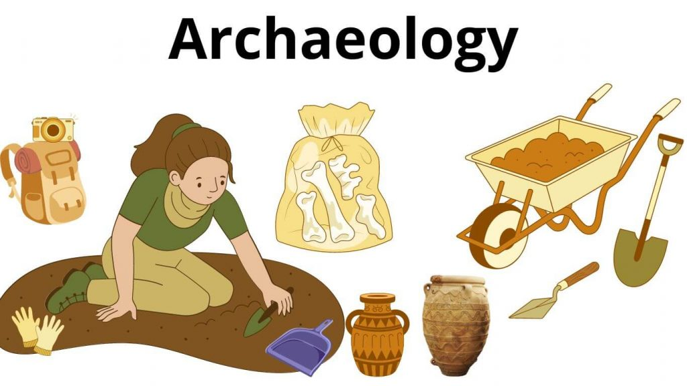

| Box Number | Subject | Id No. | Box Colour | Author | Title | ISBN Number | Our Barcode Number | Status |
|---|---|---|---|---|---|---|---|---|
| Box 01: | Archaeology | 01 | Light Blue | Sprout, Geraldine T. | Archaeological Survey Of The Barony of Ikerrin | |||
| Box 01: | Archaeology | 02 | Light Blue | O'Sullivan, Aidan, Sands, Rob & Kelly, Eamonn P. | Coolure Demesne Crannog, Lough Derravaragh An Introduction to its Archaeology And Landscapes | 1905569106 | ||
| Box 01: | Archaeology | 03 | Light Blue | Baker, Christine | The Archaeology Of Killeen Castle Co.Meath | 1905569300 | ||
| Box 01: | Archaeology | 04 | Light Blue | Fourwinds, Tom | Monumental About Prehistoric Antrim | 1845889215 | ||
| Box 01: | Archaeology | 05 | Light Blue | O'Keeffe, Tadhg | Ireland's Round Towers | 0752425714 | ||
| Box 01: | Archaeology | 06 | Light Blue | Lalor, Brian | The Irish Round Towers Origin & Architecture Explored | 1903464773 | ||
| Box 02: | Archaeology Guides | 01 | Light Blue | Bunratty Castle | Bunratty Castle & Folk Park. A Window On The Past | 1901123472 | ||
| Box 02: | Archaeology Guides | 02 | Light Blue | Ireland, Archaeology | The Medieval Town Of Athenry (Heritage Guide No. 60) | |||
| Box 02: | Archaeology Guides | 03 | Light Blue | Ireland, Archaeology | Newgrange Co. Meath (Heritage Guide No. 08) | |||
| Box 02: | Archaeology Guides | 04 | Light Blue | National Museum | Irish High Crosses Exhibition | |||
| Box 02: | Archaeology Guides | 05 | Light Blue | Roberts, Jack | Stone Circles of Cork & Kerry An Illurtrated Guide | |||
| Box 02: | Archaeology Guides | 06 | Light Blue | Roberts, Jack | Antiquities of The Beara Peninsula | |||
| Box 02: | Archaeology Guides | 07 | Light Blue | Roberts, Jack | Sheela Na Gigs Of Ireland | 1901083268 | ||
| Box 02: | Archaeology Guides | 08 | Light Blue | N/A | The Celtic Year. A Perpetual Solar & Lunar Calendar | 1901083357 | ||
| Box 02: | Archaeology Guides | 09 | Light Blue | Survey Office Ordnance | Map Of Monastic Ireland | |||
| Box 02: | Archaeology Guides | 10 | Light Blue | McManus, Damien | Ogam Stones | 1859183204 | ||
| Box 02: | Archaeology Guides | 11 | Light Blue | N/A | Stone Wall Construction In West Cork | |||
| Box 02: | Archaeology Guides | 12 | Light Blue | Ryan, Nicholas | Stone Upon Stone. The Use Of Stone In Irish Building | 1903464919 | ||
| Box 02: | Archaeology Guides | 13 | Light Blue | Laheen, Mary | Drystone Walls Of The Aran Islands. Exploring The Cultural Landscape | 1848890257 | ||
| Box 02: | Archaeology Guides | 14 | Light Blue | McCarthy, Hugh | Burren Archaeology. A Tour Guide | 1848891059 | ||
| Box 02: | Archaeology Guides | 15 | Light Blue | Darling, John Lindsey | St. Mullose Church, Kinsale | 191965061X | ||
| Box 02: | Archaeology Guides | 16 | Light Blue | Cochrane, Robert | Ancient & National Monuments In The County Of Cork | 1919650601 | ||
| Box 03: | Archaeology Of Cork City | 01 | Light Blue | Hurley, Maurice F | Excavations At The North Gate Bridge Cork 1994 | 0902282050 | ||
| Box 03: | Archaeology Of Cork City | 02 | Light Blue | Hurley, Maurice F | Excavations In Cork City 1984-2000 | 0902282107 | ||
| Box 03: | Archaeology Of Cork City | 03 | Light Blue | Hurley, Maurice F | Archaeological Excavations At South Main Street 2003-2005 | 0902282190 | ||
| Box 03: | Archaeology Of Cork City | 04 | Light Blue | Hurley, Maurice F | Old Blackpool: An Historic Cork Surburb | 0902282085 | ||
| Box 04: | Archaeology Of Cork city | 01 | Light Blue | Hurley, Maurice | Archaeology & Cultural Heritage | |||
| Box 04: | Archaeology Of Cork City | 02 | Light Blue | Hammond, Fred | Survey Of The Machinary At The Beamish & Crawford Brewery | |||
| Box 04: | Archaeology Of Cork City | 03 | Light Blue | Coughlan, Jack | Beamish & Crawford Brewery History & Record Of The Existing Buildings With The Assessment Of Signature | |||
| Box 04: | Archaeology Of Cork City | 04 | Light Blue | Cleary, Rose M. | Skiddy's Castle And Christ Church Cork | 0902282069 | ||
| Box 04: | Archaeology Of Cork City | 05 | Light Blue | Johnson, Gina | The Laneways Of Medieval Cork | 0902282077 | ||
| Box 05: | National Museum | 01 | Light Blue | Stalley, Roger | Irish High Crosses | 0946172560 | ||
| Box 05: | National Museum | 02 | Light Blue | Manning, Conleth | Early Irish Monasteries | 094617248X | ||
| Box 05: | National Museum | 03 | Light Blue | Kenny, Michael | The 1798 Rebellion | 0946172501 | ||
| Box 05: | National Museum | 04 | Light Blue | Teahan, John | Irish Furniture & Woodcraft | 0946172390 | ||
| Box 05: | National Museum | 05 | Light Blue | Kenny, Michael | The Road To Freedom | 0946172358 | ||
| Box 05: | National Museum | 06 | Light Blue | O'Floinn, Raghnall | Irish Shrines & Reliquaries Of The Middle Ages | 0946172404 | ||
| Box 05: | National Museum | 07 | Light Blue | Mould, Daphne D.C. Pochin | Discovering Cork | 0863221297 | ||
| Archaeology 05: | Archaeology | 08 | Light Blue | James, Edward | Our Ancient Heritage | |||
| Box 06: | Early Ireland | 01 | Light Blue | O'Kelly, Michael J. | Early Ireland An Introduction To Irish Prehistory | 0521336872 | ||
| Box 06: | Early Ireland | 02 | Light Blue | Rynne, Etienne | North Munster Studies Essays In Commeroration Of Monsignor Michael Moloney | |||
| Box 06: | Early Ireland | 03 | Light Blue | Stout, Matthew | The Irish Ringfort | 1851825827 | ||
| Box 06: | Conference Paper | 04 | Light Blue | UCC | Making Christian Landscapes | |||
| Box 06: | Early Ireland | 05 | Light Blue | De Poar, Liam | Ireland And Early Europe | 1851822984 | ||
| Box 07: | Archaeology | 01 | Light Blue | Grosse, | The Antiquities Of Ireland Vol. 01 | 0946198020 | ||
| Box 07: | Archaeology | 02 | Light Blue | Grosse, | The Antiquities Of Ireland Vol. 02 | |||
| Box 07: | Archaeology | 03 | Light Blue | Joyce, P.W. LL.D | Irish Names Of Places Vol. 01 | |||
| Box 07: | Archaeology | 04 | Light Blue | Clarke, H.B. & Simms, Anngret | The Comparative History Of Urban Origins In Non-Roman Europe, Part 01 And 02: Ireland, Wales, Denmark, Germany, Poland and Russia From The Ninth To The Thirteenth Century |